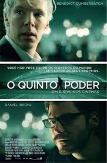

Jogos de Guerra
O filme "Jogos de Guerra" foi produzido em plena Guerre Fria e retrata a história de um garoto
que acaba entrando nos sistemas do exército dos Estados Unidos e executa acidentalmente um sistema
de simulação de guerra termonuclear achando que se tratava de um jogo de computador. Graças a este
acidente, o mundo se vê à beira da Terceira Guerra Mundial.É um pouco difícil acreditar que os
servidores do exército americano ficariam tão desprotegidos, mas o filme cria um suspense bacana
sobre a possibilidade da extinção da raça humana.
Hackers
Em “Harckers”, estrelado por Angelina Jolie antes de a atriz se tornar uma superestrela de Hollywood,
é um bom exemplo disso. Criado numa época em que a internet ainda era algo misterioso para quase todo o
mundo, mostra o processo de hackear algum servidor como se fosse um videogame, entre vários erros básicos.
Com o tempo e a ampliação do conhecimento básico sobre computadores, o filme ficou tão defasado que acabou
se tornando um clássico cult da década passada. Vale dar uma olhada, porque ao menos não mostrava quem tinha
familiaridade com computadores como “perdedores”, como muitos filmes da época.
Piratas do Vale do Silicio
“Piratas do Vale do Silício” é um filme que conta a história das duas maiores representantes do Vale do
Silício, Apple e Microsoft. Lançado em 1999 e feito para a televisão, ele mostra o período entre 1970 e 1985.
Steve Wozniak e Bill Gates comentaram posteriormente que o filme é relativamente fiel à realidade. Quem não
gostou muito foi Steve Jobs. Ele ligou para Noah Wyle, ator que faz Jobs no filme, e disse que achou o filme
terrível. Depois disso, convidou Wyle para fingir que era ele em um evento da Apple. Talvez Jobs não tenha
achado o filme assim tão ruim.
Matrix

“Matrix” não foi o primeiro filme a mostrar um futuro onde as máquinas se levantam e dominam a humanidade,
mas conseguiu fazer de uma forma diferente, criando um mundo alternativo onde os humanos vivem em uma falsa
realidade. Há aqueles que sentem que é errado fugir da realidade horrível em que a humanidade está presa,
enquanto outros irão lutar para manter a simulação funcionando. Um dos maiores clássicos do cinema com todo
o mérito, e você provavelmente já assistiu a este filme.
A Rede Social
O filme “A Rede Social”, de 2010, conta a história de Mark Zuckerberg e do Facebook. Ele é um filme importante
por mostrar como nasceu a rede social mais importante da atualidade. Com direção de David Fhincher, ele coloca o
ator Jesse Eisenberg na pele de Zuckerberg. O filme mostra o início da rede, dentro da Universidade de Harvard,
e as birgas entre Zuckerberg e os outros fundadores, como o brasileiro Eduardo Saverin.
O filme ganhou três Oscars e foi indicado a outros cinco, como o de melhor filme do ano.
O Quinto poder

Ao fundar o polêmico site WikiLeaks, Julian Assange conta com o apoio do amigo Daniel Domscheit-Berg. O objetivo da
página é fornecer uma plataforma para que denunciantes, anonimamente, exponham segredos do governo e crimes corporativos.
Com o crescimento do site, a dupla logo passa a dar mais furos noticiosos do que a mídia convencional. O grau de influência
de Assange aumenta, e a relação entre os dois amigos acaba bastante abalada.
Os Estagiários
Como seria trabalhar no Google? E como seria conseguir uma vaga de estágio no Google depois de seus
30 anos, quando nada mais na sua vida deu certo? O filme “Os Estagiários”, uma comédia tranquila, tenta
responder a estas questões de forma bem humorada, sempre com a empresa de buscas como plano de fundo.
Chega a parecer uma propaganda da companhia em diversos momentos, mas o filme tem seus bons momentos.
Jobs
O filme “Jobs”, de 2013, conta a história de Steve Jobs, um dos fundadores da Apple. Ele é vivido por
Ashton Kutcher, na adaptação. O filme não foi muito bem recebido pela crítica, nem pelo público. No IMDb,
por exemplo, a nota de “Jobs” é apenas 5,9. Uma nova adaptação da vida de Jobs está sendo preparada em
Hollywood, mas ainda deve demorar para chegar às telas dos cinemas.
O filme “A Rede Social”, de 2010, conta a história de Mark Zuckerberg e do Facebook. Ele é um filme importante por mostrar como nasceu a rede social mais importante da atualidade. Com direção de David Fhincher, ele coloca o ator Jesse Eisenberg na pele de Zuckerberg. O filme mostra o início da rede, dentro da Universidade de Harvard, e as birgas entre Zuckerberg e os outros fundadores, como o brasileiro Eduardo Saverin. O filme ganhou três Oscars e foi indicado a outros cinco, como o de melhor filme do ano.